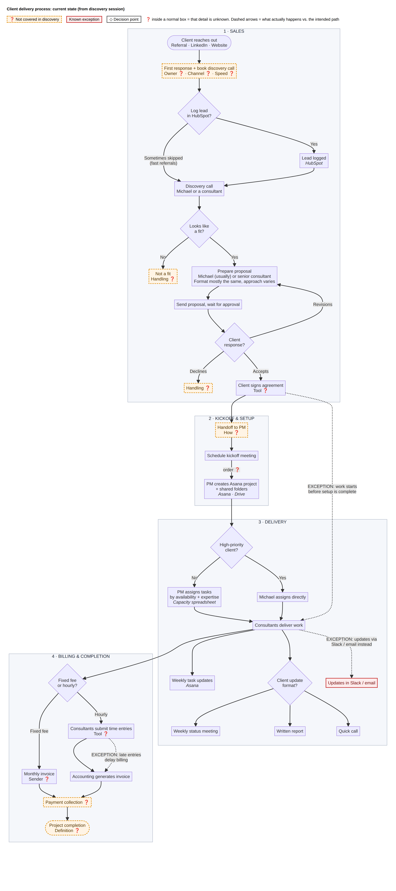

Part 2: Process Documentation
← Back to overview · Case: scenario and transcript
Labels used: statements from the transcript are facts. Anything inferred is marked [Assumption]. Anything not covered in the session is marked [Unknown]. Gap numbers (e.g. "Gap 9") refer to section 1B in 01-discovery-analysis.md.
2A. Workflow Diagram

Full-resolution image: diagram/workflow.png. Source: diagram/workflow.mmd.

How to read it: orange dashed boxes were not covered in discovery. Red boxes and dotted arrows are known exceptions, where what actually happens differs from the intended path. Diamonds are decision points. A ❓ inside a normal box means only that detail is unknown. The Mermaid source below renders on GitHub, Notion and most Markdown viewers.
flowchart TD
subgraph S1["1 · SALES"]
A(["Client reaches out<br/>Referral · LinkedIn · Website"]) --> B["First response + book discovery call<br/>Owner ❓ · Channel ❓ · Speed ❓"]:::unknown
B --> C{"Log lead<br/>in HubSpot?"}
C -- Yes --> C1["Lead logged<br/><i>HubSpot</i>"]
C -- "Sometimes skipped<br/>(fast referrals)" --> D
C1 --> D["Discovery call<br/>Michael or a consultant"]
D --> E{"Looks like<br/>a fit?"}
E -- No --> E1["Not a fit<br/>Handling ❓"]:::unknown
E -- Yes --> F["Prepare proposal<br/>Michael (usually) or senior consultant<br/>Format mostly the same, approach varies"]
F --> G["Send proposal, wait for approval"]
G --> H{"Client<br/>response?"}
H -- Revisions --> F
H -- Declines --> H1["Handling ❓"]:::unknown
H -- Accepts --> I["Client signs agreement<br/>Tool ❓"]
end
subgraph S2["2 · KICKOFF & SETUP"]
I --> J["Handoff to PM<br/>How ❓"]:::unknown
J --> K["Schedule kickoff meeting"]
K -- "order ❓" --> L["PM creates Asana project<br/>+ shared folders<br/><i>Asana · Drive</i>"]
end
subgraph S3["3 · DELIVERY"]
L --> M{"High-priority<br/>client?"}
M -- No --> M1["PM assigns tasks<br/>by availability + expertise<br/><i>Capacity spreadsheet</i>"]
M -- Yes --> M2["Michael assigns directly"]
M1 --> N["Consultants deliver work"]
M2 --> N
N --> O["Weekly task updates<br/><i>Asana</i>"]
N --> P{"Client update<br/>format?"}
P --> P1["Weekly status meeting"]
P --> P2["Written report"]
P --> P3["Quick call"]
X1["Updates in Slack / email"]:::exception
end
subgraph S4["4 · BILLING & COMPLETION"]
N --> Q{"Fixed fee<br/>or hourly?"}
Q -- "Fixed fee" --> Q1["Monthly invoice<br/>Sender ❓"]
Q -- Hourly --> Q2["Consultants submit time entries<br/>Tool ❓"]
Q2 --> Q3["Accounting generates invoice"]
Q1 --> R["Payment collection ❓"]:::unknown
Q3 --> R
R --> Z(["Project completion<br/>Definition ❓"]):::unknown
end
I -. "EXCEPTION: work starts<br/>before setup is complete" .-> N
N -. "EXCEPTION: updates via<br/>Slack / email instead" .-> X1
Q2 -. "EXCEPTION: late entries<br/>delay billing" .-> Q3
classDef unknown fill:#fff4e5,stroke:#e08a00,stroke-width:2px,stroke-dasharray:5 3,color:#5a3a00
classDef exception fill:#fdecec,stroke:#c62828,stroke-width:2px,color:#7a1010
classDef phase fill:#f5f7fb,stroke:#9aa5b8,color:#1f2937
class S1,S2,S3,S4 phaseNote: the transcript gives the kickoff before Asana setup, but doesn't confirm that order (1B, Gap 9).
2B. Structured Process Document
Process overview
| Process name | Client delivery: lead intake to billing |
| Process owner | Not named. Michael Reynolds, Managing Partner [Assumption] |
| Trigger | A potential client reaches out through a referral, LinkedIn or the website |
| End point | The invoice is sent. "Project completion" is not yet defined [Unknown] |
| Engagement types | Fixed-fee (invoiced monthly) and hourly (invoiced from time entries) |
| Systems | HubSpot, Asana, shared folders / Google Drive, a capacity spreadsheet, Slack, email. Not named: proposal, e-signature, time-tracking and invoicing tools |
| Current state | The intended process is clear, but every stage has informal variations, and documents are stored in Asana, Drive and email |
Workflow steps
| # | Step | Responsible | System | Notes |
|---|---|---|---|---|
| 1 | Client reaches out | Client | Referral, LinkedIn, website | "Most clients", so other sources may exist |
| 2 | Reply to the inquiry and book a discovery call | [Unknown] | [Unknown] | Not described |
| 3 | Log the lead | Whoever handles the lead [Assumption] | HubSpot | Sometimes skipped for fast referrals |
| 4 | Run the discovery call | Michael or a consultant | [Unknown] (call tool, notes location) | Learn the client's needs |
| 5 | Decide fit | Whoever ran the call [Assumption] | None | Criteria not defined |
| 6 | Prepare the proposal | Michael (usually) or a senior consultant | [Unknown] | "Format is mostly the same, although everyone has their own approach" |
| 7 | Send the proposal and wait for approval | The proposal author [Assumption] | Email [Assumption] | Revisions loop back to step 6 |
| 8 | Sign the agreement | Client, and the firm signer [Unknown] | [Unknown] | |
| 9 | Hand off to delivery | [Unknown] | [Unknown] | Not described. [Assumption] that this step exists |
| 10 | Schedule the kickoff meeting | [Unknown] | [Unknown] | Includes the client [Assumption] |
| 11 | Create the project and shared folders | Project manager | Asana, shared folders | Sometimes not done before work starts |
| 12 | Assign tasks | PM (usually). Michael for high-priority clients | Asana, capacity spreadsheet | Based on availability and expertise |
| 13 | Deliver the work and update progress weekly | Consultants | Asana | Some update through Slack or email |
| 14 | Update the client | [Unknown] (PM or consultant [Assumption]) | Meetings, written reports or calls | Format varies by engagement |
| 15a | Fixed fee: send the monthly invoice | [Unknown] (accounting [Assumption]) | [Unknown] | "Usually" monthly |
| 15b | Hourly: submit time entries | Consultants | [Unknown] | Sometimes late |
| 15c | Hourly: generate the invoice | Accounting | [Unknown] | Delayed when time entries are late |
| 16 | Collect payment and close the project | [Unknown] | [Unknown] | Not described |
Decision points
| # | Decision | Who decides | Rule today | Outcomes |
|---|---|---|---|---|
| D1 | Log the lead in HubSpot? | Whoever handles the lead | None. Skipped when "moving quickly" on referrals | Logged / not logged |
| D2 | Who runs the discovery call? | [Unknown] | [Unknown] | Michael / a consultant |
| D3 | Is the client a fit? | [Unknown] | "If it looks like a fit" | Proposal / not a fit (handling [Unknown]) |
| D4 | Who writes the proposal? | [Unknown] | Usually Michael | Michael / a senior consultant |
| D5 | Client response to the proposal | Client | n/a | Accept → agreement. Revise → step 6. Decline → [Unknown] |
| D6 | Start before setup is complete? | [Unknown] | When the client wants to move quickly | Wait / start early |
| D7 | Who assigns the work? | Michael or the PM | High-priority clients go to Michael ("high priority" not defined) | PM / Michael |
| D8 | Client update format | [Unknown] | Varies by engagement | Meeting / written report / call |
| D9 | Billing path | Set by the agreement [Assumption] | Engagement type | Fixed fee → monthly invoice. Hourly → time entries |
Known exceptions (stated in the transcript)
| # | Intended | What actually happens | Effect |
|---|---|---|---|
| E1 | Every lead is logged in HubSpot | Fast-moving referrals are sometimes not logged | Incomplete pipeline. Lead history may be lost |
| E2 | Proposals follow a mostly shared format | Each author has their own approach | Inconsistent client experience. Hard to reuse proposals |
| E3 | Setup is finished before work starts | Consultants sometimes start early because clients want to move quickly | Work isn't tracked in Asana from day one. Files start in scattered places |
| E4 | The PM assigns work | Michael assigns directly for high-priority clients | The PM and the capacity spreadsheet may not reflect who is busy [Assumption] |
| E5 | Weekly progress updates in Asana | Some consultants update through Slack or email | No single view of project status |
| E6 | Weekly status meetings (the typical format) | Meetings, written reports or calls, depending on the client | Different amounts of effort per client. No standard for updates |
| E7 | Time entries arrive on time | Time entries sometimes come in late | Hourly invoicing is delayed, which affects cash flow [Assumption] |
| E8 | Documents in one place | Spread across Asana, Google Drive and email | Time lost searching. Risk when people leave |
Areas that need clarification
These are covered in full in 1B and 1C. In priority order: 1. First response and handoff (steps 2 and 9): no owner, so leads and client context can be lost. 2. Completion and payment collection (step 16): the end of the process is undefined. 3. Early starts (E3): how often it happens, and whether it ever happens before the agreement is signed. 4. Unnamed tools (proposal, e-signature, time tracking, invoicing): needed before any automation can be designed. 5. Decision rules (D2, D3, D4, D6, D7, D8): each depends on someone's judgement, with no written rule. 6. Who owns client updates and fixed-fee invoices (steps 14, 15a).